<style>figure video{width:100%;max-width:100%;height:auto;max-height:520px;border:1px solid var(--edge);border-radius:6px;background:#000}</style>
<main>
  <header>
    <h1>The guard rail: your answers drawn, and nine left to ask</h1>
    <p class="lede">Nothing here is built. Every picture is the real app; "Drawn" adds only the new thing on top. This round has three squadrons, 142, 149 and 150, as you asked. Green is what I recommend.</p>
  </header>

  <div class="top" id="list">
    <p class="how"><b>To answer:</b> reply "as recommended for all". Or tap <b>Differently</b> on any item, then copy the reply from the bar at the foot.</p>
    <p class="count">All new since the last page. Your answers to groups A and C are taken off the page (kept in the project). Group B waits until after the first build, as you said.</p>
    <details class="who"><summary>Who the examples name</summary>
      <p>Saber is a master admin; his home squadron is 142. Hunter is 142's admin; he holds Plan of 149 (full access) and View of 150 (look only). Kestrel is 149's own admin. Mako is 150's own admin. Squadron 150 was made for these pictures with "+ New squadron", with three people of its own.</p>
      <p>Tap a picture to enlarge it; tap again for full size. The films play when tapped.</p>
    </details>
    <h2 class="g">Group E: new questions <span>9</span></h2>
    <ol>
      <li class="new"><a href="#e1"><b>E1</b><span><span class="t">The Calendar window when you pick another squadron</span><span class="r">Closes by itself, unless a holiday or Every Monday is half done.</span></span></a></li>
      <li class="new"><a href="#e2"><b>E2</b><span><span class="t">The Tracker's marking window when you pick</span><span class="r">Closes by itself, as today.</span></span></a></li>
      <li class="new"><a href="#e3"><b>E3</b><span><span class="t">The chart editor left open at the member-view switch</span><span class="r">It closes at the switch.</span></span></a></li>
      <li class="new"><a href="#e4"><b>E4</b><span><span class="t">A Tracker window hidden behind the Flow chart tab</span><span class="r">The ones that only show close by themselves.</span></span></a></li>
      <li class="new"><a href="#e5"><b>E5</b><span><span class="t">An input window held since midnight, then you pick</span><span class="r">The pick goes through and gives it back, as today.</span></span></a></li>
      <li class="new"><a href="#e6"><b>E6</b><span><span class="t">Who is told when someone is given Plan of 149</span><span class="r">149's own admins; his name wears "142".</span></span></a></li>
      <li class="new"><a href="#e7"><b>E7</b><span><span class="t">Undo of "+ New squadron" with a window open</span><span class="r">Refused in the first build; the rest waits with group B.</span></span></a></li>
      <li class="new"><a href="#e8"><b>E8</b><span><span class="t">A master admin's "All squadrons" with 149 picked</span><span class="r">Every row whole; his own squadron open.</span></span></a></li>
      <li class="new"><a href="#e9"><b>E9</b><span><span class="t">What I read into your answers</span><span class="r">Ten small points; say if any is wrong.</span></span></a></li>
    </ol>
    <h2 class="g">Group D: what you ruled, drawn for your look <span>12</span></h2>
    <ol>
      <li class="new"><a href="#d1"><b>D1</b><span><span class="t">"+ Add a person" at the top, with Cancel</span><span class="r">As drawn.</span></span></a></li>
      <li class="new"><a href="#d2"><b>D2</b><span><span class="t">The squadron number's two fades (films)</span><span class="r">As drawn.</span></span></a></li>
      <li class="new"><a href="#d3"><b>D3</b><span><span class="t">The bell with three squadrons</span><span class="r">As drawn.</span></span></a></li>
      <li class="new"><a href="#d4"><b>D4</b><span><span class="t">Other squadrons folded on Admin → Users</span><span class="r">As drawn.</span></span></a></li>
      <li class="new"><a href="#d5"><b>D5</b><span><span class="t">A man of another squadron, opened</span><span class="r">As drawn; "None" stays lit.</span></span></a></li>
      <li class="new"><a href="#d6"><b>D6</b><span><span class="t">Plan greyed for one who may not give it</span><span class="r">The reason as words under the line.</span></span></a></li>
      <li class="new"><a href="#d7"><b>D7</b><span><span class="t">A master admin's own squadron open</span><span class="r">As drawn.</span></span></a></li>
      <li class="new"><a href="#d8"><b>D8</b><span><span class="t">Another squadron's archived callsign</span><span class="r">As drawn; "Add person" greyed meanwhile.</span></span></a></li>
      <li class="new"><a href="#d9"><b>D9</b><span><span class="t">Bug reports with their squadron</span><span class="r">As drawn.</span></span></a></li>
      <li class="new"><a href="#d10"><b>D10</b><span><span class="t">The badge reading "View only"</span><span class="r">A press still switches to the member view.</span></span></a></li>
      <li class="new"><a href="#d11"><b>D11</b><span><span class="t">"+ Commitment" on a squadron with no SANS aircrew</span><span class="r">The reason as words beside it.</span></span></a></li>
      <li class="new"><a href="#d12"><b>D12</b><span><span class="t">"+ Input" and the sign-off boxes on another squadron</span><span class="r">As drawn.</span></span></a></li>
    </ol>
    <div class="told">
      <p class="label">Told, nothing to answer</p>
      <ul>
        <li><b>Found today and fixed in the first build</b>, each against something you already ruled: a day opened on the SANS calendar and the Leave War's day panel stay open when you pick 150 and quietly show 150's figures; 149's own admin, opening a 142 man, still sees his sign-in and role and a live Save; "+ Input" on 149 starts with Hunter himself picked.</li>
        <li><b>A bell line about an input you filed for 149, after your Plan of 149 ended</b>: it cannot happen. When the Plan ends, 149's lines leave your bell, so there is no line left to press.</li>
        <li><b>Bug reports are lost today at Logout or a reload, for everyone</b> (not only members, as first thought). They are kept with the first build's bug-report change.</li>
      </ul>
    </div>
    <details class="fold">
      <summary>Group B: 12 that wait until after the first build (Logout, Undo, the refresh card)</summary>
      <!--GBLIST-->
    </details>
  </div>

  <h3>Group E: new questions</h3>

  <section id="e1" class="newq">
    <h2>E1. The Calendar window when you pick another squadron</h2>
    <p class="when"><b>When this happens</b>: Saber is in Inputs settings → Calendar on 142, marking flying days for December. He wants to check 149's, and picks 149 with the Calendar still open. A few times a month, at the desk.</p>
    <p><b>Today</b>: a press on a day is saved at once. But the window has two small forms that wait for their own Save: "Every Monday" and "Add a holiday", which has a box to type the holiday's name. Picking 149 closes the whole window with nothing said, and a holiday name typed and not yet saved is lost.</p>
    <div class="pair">
      <figure><figcaption><b>Today</b>: a holiday name typed, not saved, 142 in view.</figcaption></figure>
      <figure><figcaption><b>Today</b>: 149 picked. The window is gone, and the name with it.</figcaption></figure>
    </div>
    <p><span class="rec">Recommended:</span> the Calendar closes by itself at a pick, like the windows that only show things, because each day you press is already saved. But while one of its two forms holds something not saved, the pick is refused with the grey note, as for any window with typing:</p>
    <div class="words"><!--E1WORDS--></div>
    <p class="note">The other choices: refuse whenever the Calendar is open (one more press for nothing, most of the time); or always close it (a typed holiday name is lost, as today).</p>
    <p class="nav"><a href="#list">↑ The list</a><button type="button" class="diff" data-q="E1" aria-pressed="false">Differently</button></p>
  </section>

  <section id="e2" class="newq">
    <h2>E2. The Tracker's marking window when you pick</h2>
    <p class="when"><b>When this happens</b>: Saber marks a student's sortie on 142's Tracker (a press on a ball opens the marking window), then opens the squadron list to look at 149. Several times a week.</p>
    <p><b>Today</b>: every press in the marking window is saved at once (Fails +, Fails −, a grade), and there is nothing to type. The one thing that waits: a "Done on" day picked for an event not yet done, which is kept only once a grade is given. The press on the squadron list closes the marking window, and the pick goes through.</p>
    <div class="pair">
      <figure>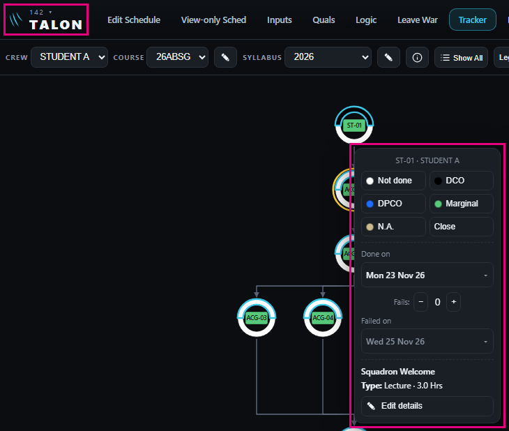<figcaption><b>Today</b>: the marking window open.</figcaption></figure>
      <figure><figcaption><b>Today</b>: one press on the squadron list closes it and opens the list.</figcaption></figure>
    </div>
    <p><span class="rec">Recommended:</span> leave it as today: it closes by itself and the pick goes through. The only thing lost is a "Done on" day without a grade, which is one press to pick again.</p>
    <p class="note">The other choice: refuse the pick while a "Done on" day is waiting. It needs the Tracker to stop closing this window at a press on the squadron list, which is a change to how the Tracker's presses work.</p>
    <p class="nav"><a href="#list">↑ The list</a><button type="button" class="diff" data-q="E2" aria-pressed="false">Differently</button></p>
  </section>

  <section id="e3" class="newq">
    <h2>E3. The chart editor left open at the member-view switch</h2>
    <p class="when"><b>When this happens</b>: Hunter (Plan of 149) opens "Edit chart layout" on 149's Tracker, looks, moves nothing, and presses his name badge to see the member view. Rare.</p>
    <p><b>Today</b>: nothing is asked. The member view comes up on 149, which has no Tracker tab, so the editor is out of sight. Back in the admin view, 149's Tracker still has the editor open.</p>
    <div class="pair">
      <figure><figcaption><b>Today</b>: the editor open, nothing moved.</figcaption></figure>
      <figure>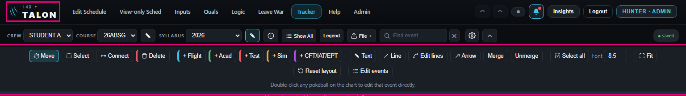<figcaption><b>Today</b>: back in the admin view, still open.</figcaption></figure>
    </div>
    <p><span class="rec">Recommended:</span> the editor closes at the switch. Nothing was moved, so nothing is lost, and nothing is left open behind a switch you made. If something was moved, the question you already approved is asked (Save them / Discard them / Stay).</p>
    <p class="nav"><a href="#list">↑ The list</a><button type="button" class="diff" data-q="E3" aria-pressed="false">Differently</button></p>
  </section>

  <section id="e4" class="newq">
    <h2>E4. A Tracker window hidden behind the Flow chart tab</h2>
    <p class="when"><b>When this happens</b>: Saber opens a student's Failures in the Tracker's Info panel, then makes the browser half his screen (or turns a tablet upright). The Tracker then shows one half at a time, the Flow chart, and the Failures window is out of sight behind the Info tab. He picks 149. Rare.</p>
    <p><b>Today</b>: nothing on screen says a window is open. The pick goes through and the window is gone; it does not come back on 142.</p>
    <div class="pair">
      <figure>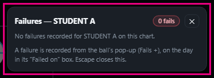<figcaption><b>Today</b>: Failures open at full width.</figcaption></figure>
      <figure><figcaption><b>Today</b>: narrower, the Flow chart shows; the window is hidden.</figcaption></figure>
    </div>
    <p><span class="rec">Recommended:</span> the Info panel's windows that only show things (Down days, Failures) close by themselves at a pick, like the other show-only windows you approved. Its two small pop-ups for a lull are checked before the build: if one holds a choice not yet saved, the pick is refused with a note naming the Info tab, its words drawn for you first.</p>
    <p class="nav"><a href="#list">↑ The list</a><button type="button" class="diff" data-q="E4" aria-pressed="false">Differently</button></p>
  </section>

  <section id="e5" class="newq">
    <h2>E5. An input window held since midnight, then you pick</h2>
    <p class="when"><b>When this happens</b>: Saber has an input open with words typed when, at midnight, a change he did not make moves his home from 142 to 149. The window is greyed with "This change could not be saved." and Close. He picks 142. Very rare.</p>
    <p><b>Today</b>: the pick goes through, and on 142 the window comes back live with his words, so he can save them there.</p>
    <div class="pair">
      <figure><figcaption><b>Today</b>: held on 149, his words still in it.</figcaption></figure>
      <figure><figcaption><b>Today</b>: 142 picked; the window is live and his words can be saved.</figcaption></figure>
    </div>
    <p><span class="rec">Recommended:</span> keep today's way for a window already held: the pick goes through and gives it back. Refusing would leave Close as his only way on, and Close drops his words without asking. The later build that replaces held windows with a card settles this for good.</p>
    <p class="nav"><a href="#list">↑ The list</a><button type="button" class="diff" data-q="E5" aria-pressed="false">Differently</button></p>
  </section>

  <section id="e6" class="newq">
    <h2>E6. Who is told when someone is given Plan of 149</h2>
    <p class="when"><b>When this happens</b>: Kestrel (149's admin) gives Hunter (142's admin) Plan of 149, so Hunter can help plan 149's week. Later he ends it. A few times a year.</p>
    <p>You ruled that 149's admins are told on their bell, and who did it. Two things are open. <b>First</b>, with three squadrons, a 149 admin reading "Hunter" may not know where Hunter is from. <b>Second</b>, Mako (150's admin) might also hold Plan of 149; is he told too?</p>
    <div class="pair">
      <figure><figcaption><b>Drawn</b>: the two lines as worded.</figcaption></figure>
      <figure>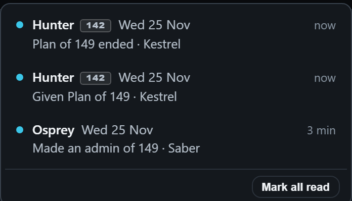<figcaption><b>Drawn</b>: the same, Hunter's name wearing his home "142".</figcaption></figure>
    </div>
    <p><span class="rec">Recommended:</span> Hunter's name wears his home squadron's grey number, as names from another squadron do in the sign-off boxes; and only 149's own admins are told, the people who can give or end Plan of 149, not someone who only holds Plan of it. Nobody is told of his own press, as today, so Kestrel's line reaches 149's other admins.</p>
    <p class="nav"><a href="#list">↑ The list</a><button type="button" class="diff" data-q="E6" aria-pressed="false">Differently</button></p>
  </section>

  <section id="e7" class="newq">
    <h2>E7. Undo of "+ New squadron" with a window open</h2>
    <p class="when"><b>When this happens</b>: Saber makes squadron 150, picks it, opens the Calendar there (or a save fails), then presses Undo. Only a master admin makes squadrons, so this is rare.</p>
    <p><b>Today</b>: "Undid: adding a squadron". 150 is gone, the bar is back on 142, and nothing is asked: an open window or a change not saved goes with it.</p>
    <div class="pair">
      <figure><figcaption><b>Today</b>: on the new squadron, before Undo.</figcaption></figure>
      <figure><figcaption><b>Today</b>: after Undo, back on 142, nothing said.</figcaption></figure>
    </div>
    <p><b>Why it is here</b>: you put Undo off to group B, after the first build. But this one Undo changes the squadron in view, the very thing the guard stops, so the first build would leave this one way through. I should have told you that when you put group B off.</p>
    <p><span class="rec">Recommended:</span> the first build refuses this Undo while a window is open or a change is not saved, with the grey note (its words drawn for you first). Everything else about Undo still waits for your group B answers.</p>
    <p class="note">The other choice: leave it open until group B. Nothing else in the first build depends on it.</p>
    <p class="nav"><a href="#list">↑ The list</a><button type="button" class="diff" data-q="E7" aria-pressed="false">Differently</button></p>
  </section>

  <section id="e8" class="newq">
    <h2>E8. A master admin's "All squadrons" with 149 picked</h2>
    <p class="when"><b>When this happens</b>: Saber (home 142) has 149 picked, goes to Admin → Users and ticks "All squadrons" in Filter, to see everyone. Now and then.</p>
    <p>You ruled that in "All squadrons" his own squadron stands open and the rest fold. You also ruled that on 149's page a 142 man shows only his name and his 149 access line. With 149 picked and the tick on, which wins?</p>
    <p><span class="rec">Recommended:</span> in "All squadrons" Saber sees every row whole, because a master admin is an admin of every squadron. His own 142 stands open at the top, 149 and 150 folded under it, as drawn in D7. The short rows of D5 are for someone who is not an admin of that squadron.</p>
    <p class="note">The other choice: the squadron picked (149) stands open and 142 is folded with short rows. That makes "All squadrons" look different depending on what is picked.</p>
    <p class="nav"><a href="#list">↑ The list</a><button type="button" class="diff" data-q="E8" aria-pressed="false">Differently</button></p>
  </section>

  <section id="e9" class="newq">
    <h2>E9. What I read into your answers</h2>
    <p>Each is how the plan understands an answer of yours where you did not say. None is built unless you let it stand.</p>
    <div class="told"><ul>
      <li><b>His own inputs on another squadron's page</b>: a man who moved from 142 and only holds View of 142 keeps seeing his old 142 inputs on his own page, because View does not open 142's Inputs page.</li>
      <li><b>Windows you have not seen one by one</b> (the Tracker's Show All and its side pop-ups; the Scheduler Board's two question cards; Leave War sheets that only show figures, such as a day's list or the OIL tracker) are checked one by one before the build: those with nothing to edit close by themselves, as you ruled for the others; the rest refuse.</li>
      <li><b>A bell line that takes you to another squadron</b> closes the show-only windows and ends edit modes, the same as a pick.</li>
      <li><b>A pick waiting for a save to finish</b> is dropped if you press something else meanwhile.</li>
      <li><b>The fade</b> runs at every change of squadron after the app has opened, whether you pressed or not (a move at midnight too); only the top bar's number fades.</li>
      <li><b>Add a person</b>: after a person is added the form clears and stays open for the next one; Escape does what Cancel does.</li>
      <li><b>On another squadron's page</b> a man's row has no sign-in or roster dot and no role badge; someone holding Plan of the squadron stays on its main list.</li>
      <li><b>"The bell shows more than one squadron"</b> means more than one Show button switched on, so the number column does not come and go as lines arrive.</li>
      <li><b>Bug reports</b> are kept for good (today they vanish at a reload); the number shows on them once the app has more than one squadron.</li>
      <li><b>Restoring an archived man</b> whose callsign is now taken names the squadron too: "… is already taken on 149".</li>
    </ul></div>
    <p class="nav"><a href="#list">↑ The list</a><button type="button" class="diff" data-q="E9" aria-pressed="false">Differently</button></p>
  </section>

  <h3>Group D: what you ruled, drawn</h3>

  <section id="d1" class="newq">
    <h2>D1. "+ Add a person" at the top, with Cancel</h2>
    <p class="when"><b>What you ruled</b>: the button beside Filter; the form opens under it; Cancel clears it; while something is typed in it, a pick of another squadron is refused.</p>
    <div class="pair">
      <figure><figcaption><b>Today</b>: the form at the very foot of the list.</figcaption></figure>
      <figure><figcaption><b>Drawn, desktop</b>: "+ Add a person" beside Filter.</figcaption></figure>
      <figure>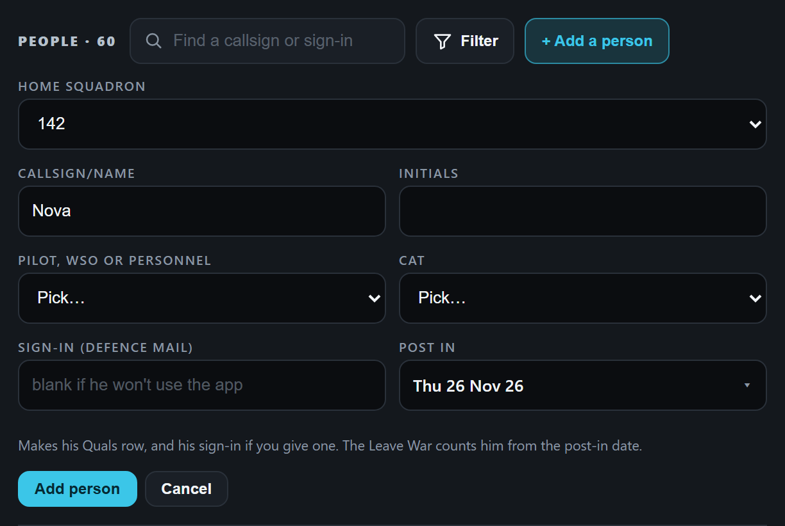<figcaption><b>Drawn</b>: pressed, the form opens under the row; "Add person" and "Cancel" at its foot.</figcaption></figure>
      <figure><figcaption><b>Drawn</b>: after Cancel, shut and empty.</figcaption></figure>
      <figure class="tall">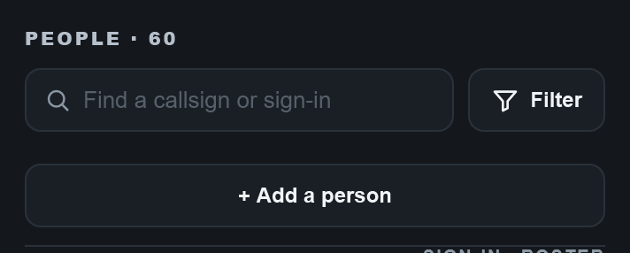<figcaption><b>Drawn, phone</b>: full width under the search.</figcaption></figure>
      <figure class="tall"><figcaption><b>Drawn, phone</b>: the form open.</figcaption></figure>
      <figure><figcaption><b>Drawn</b>: a name typed, 149 pressed: "Blocked: add or cancel the new person, then pick 149."</figcaption></figure>
      <figure class="tall">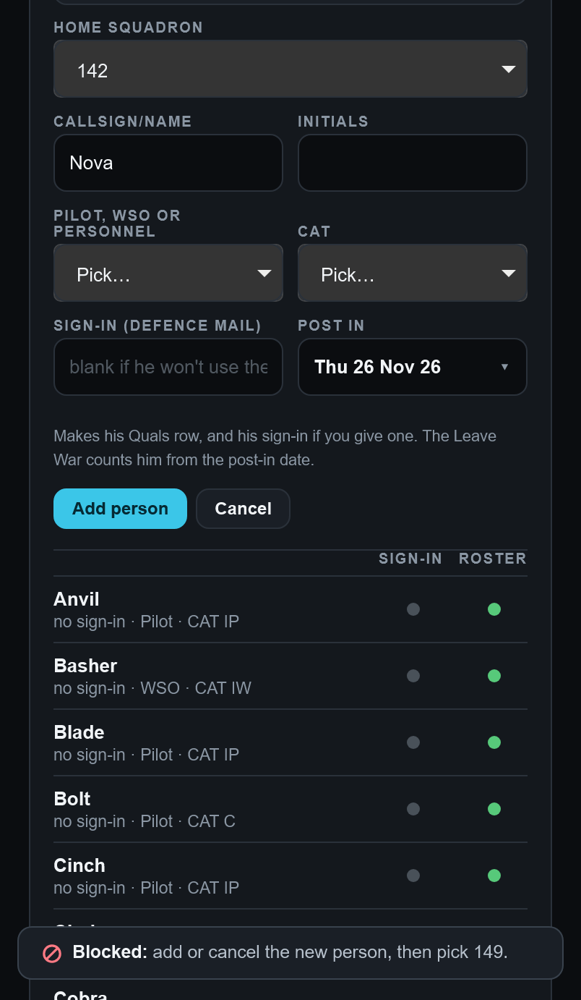<figcaption><b>Drawn, phone</b>: the same note at the foot.</figcaption></figure>
    </div>
    <p class="note">On a desktop the note covers part of the page's title "Admin" for the few seconds it shows; nothing you would press is under it.</p>
    <p><span class="rec">Recommended:</span> as drawn.</p>
    <p class="nav"><a href="#list">↑ The list</a><button type="button" class="diff" data-q="D1" aria-pressed="false">Differently</button></p>
  </section>

  <section id="d2" class="newq">
    <h2>D2. The squadron number's two fades</h2>
    <p class="when"><b>What you ruled</b>: at every change of squadron, the number dims to about a third and back, twice, in about a second; with "less motion" on, white for a second instead.</p>
    <p><b>Drawn</b>: Saber on 142 picks 150. Tap a film to play it.</p>
    <div class="pair">
      <figure><video src="drawn/e2-d.mp4" controls playsinline muted preload="metadata"></video><figcaption><b>Desktop</b>: 142 to 150.</figcaption></figure>
      <figure><video src="drawn/e2-p.mp4" controls playsinline muted preload="metadata"></video><figcaption><b>Phone</b>.</figcaption></figure>
      <figure><video src="drawn/e2-d-rm.mp4" controls playsinline muted preload="metadata"></video><figcaption><b>Desktop, less motion on</b>: white, then grey.</figcaption></figure>
      <figure><video src="drawn/e2-p-rm.mp4" controls playsinline muted preload="metadata"></video><figcaption><b>Phone, less motion on</b>.</figcaption></figure>
    </div>
    <p class="note">The number is small and already grey, so the fade is gentle. If you want it to catch the eye more, say so: it could dim further, never fully out.</p>
    <p><span class="rec">Recommended:</span> as drawn.</p>
    <p class="nav"><a href="#list">↑ The list</a><button type="button" class="diff" data-q="D2" aria-pressed="false">Differently</button></p>
  </section>

  <section id="d3" class="newq">
    <h2>D3. The bell with three squadrons</h2>
    <p class="when"><b>What you ruled</b>: when the bell shows more than one squadron, every line wears its number, a plain grey number first on the line, in one column. A line about your own account keeps the place empty.</p>
    <div class="pair">
      <figure>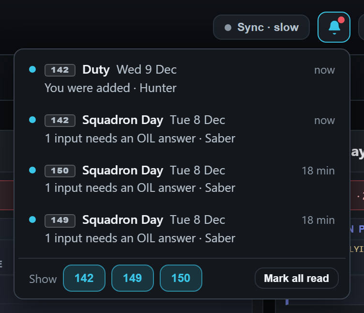<figcaption><b>Drawn, desktop</b>: Saber with 142, 149 and 150 switched on. Every line here is a real line.</figcaption></figure>
      <figure class="tall"><figcaption><b>Drawn, phone</b>.</figcaption></figure>
      <figure>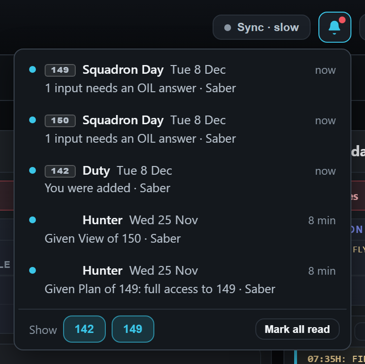<figcaption><b>Drawn</b>: Hunter's bell (142 and 149); his own account lines keep the number's place empty. 150 is not there: View of a squadron never shows its bell lines, as you ruled.</figcaption></figure>
    </div>
    <p class="note">Three of Saber's lines read alike ("Squadron Day … 1 input needs an OIL answer · Saber"); only the number tells them apart, which is what the column is for.</p>
    <p><span class="rec">Recommended:</span> as drawn.</p>
    <p class="nav"><a href="#list">↑ The list</a><button type="button" class="diff" data-q="D3" aria-pressed="false">Differently</button></p>
  </section>

  <section id="d4" class="newq">
    <h2>D4. Other squadrons folded on Admin → Users</h2>
    <p class="when"><b>What you ruled</b>: under a squadron's own people, each other squadron is one closed heading; seen only by those who may give access to that squadron.</p>
    <div class="pair">
      <figure>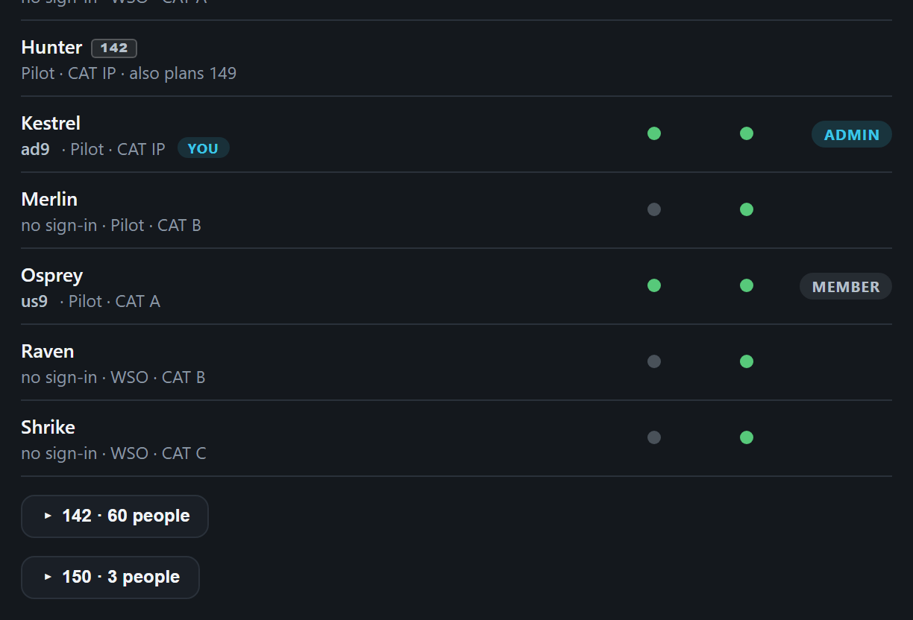<figcaption><b>Drawn</b>: Kestrel on 149. Under 149's people, "▸ 142 · 60 people" and "▸ 150 · 3 people".</figcaption></figure>
      <figure class="tall">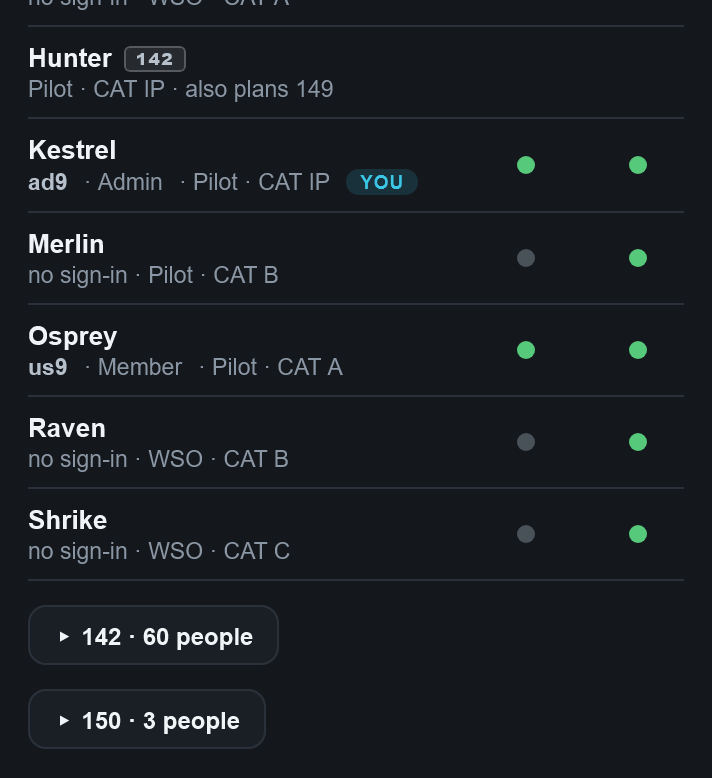<figcaption><b>Drawn, phone</b>.</figcaption></figure>
    </div>
    <p><span class="rec">Recommended:</span> as drawn.</p>
    <p class="nav"><a href="#list">↑ The list</a><button type="button" class="diff" data-q="D4" aria-pressed="false">Differently</button></p>
  </section>

  <section id="d5" class="newq">
    <h2>D5. A man of another squadron, opened</h2>
    <p class="when"><b>What you ruled</b>: on 149's page a 142 man shows only his callsign, "142", seat, CAT and his 149 access line (None · View · Plan). Nothing else.</p>
    <div class="pair">
      <figure><figcaption><b>Today</b>: Hunter on 149 opening Ranger (142): sign-in, role, Save, Suspend, Archive and Delete all live. Fixed by the first build.</figcaption></figure>
      <figure><figcaption><b>Drawn</b>: "▾ 142 · 60 people" opened; each row its access line for 149.</figcaption></figure>
      <figure class="tall">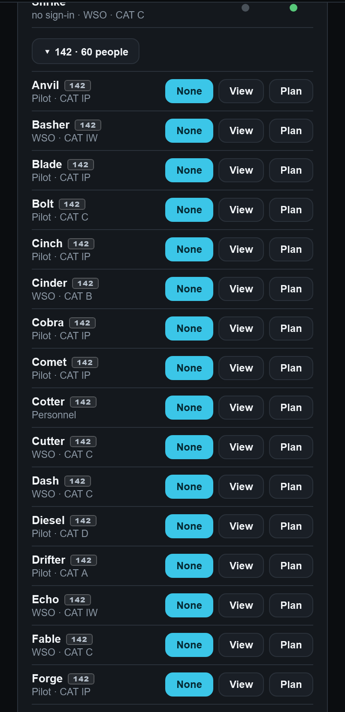<figcaption><b>Drawn, phone</b>.</figcaption></figure>
    </div>
    <p class="note">Sixty lit "None" buttons in a column look heavy. They are the app's own access line, the same as on every person's row, so it reads the same everywhere; the other choice is to show "None" unlit in this list only, which makes one control look two ways.</p>
    <p><span class="rec">Recommended:</span> as drawn, the access line the same as everywhere else.</p>
    <p class="nav"><a href="#list">↑ The list</a><button type="button" class="diff" data-q="D5" aria-pressed="false">Differently</button></p>
  </section>

  <section id="d6" class="newq">
    <h2>D6. Plan greyed for one who may not give it</h2>
    <p class="when"><b>What you ruled</b>: Plan of 149 is given and ended by 149's own admins or a master admin, never by someone who only holds Plan of it.</p>
    <p><b>Example</b>: Hunter holds Plan of 149 and opens a 142 man on 149's page. He may give View of 149, but Plan is greyed.</p>
    <div class="pair">
      <figure>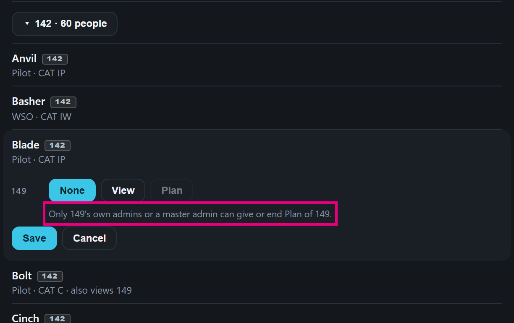<figcaption><b>Drawn</b>: the reason as words under the line: "Only 149's own admins or a master admin can give or end Plan of 149."</figcaption></figure>
      <figure>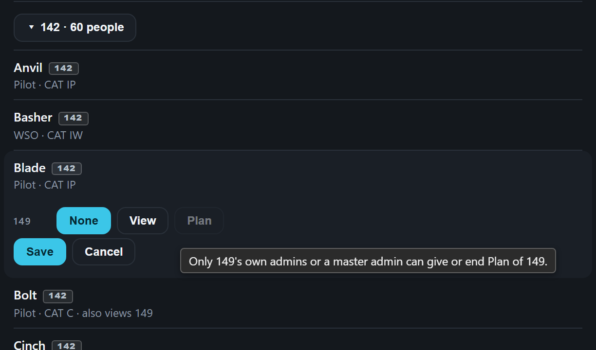<figcaption><b>Drawn</b>: the same reason shown only when the mouse rests on it.</figcaption></figure>
      <figure><figcaption><b>Drawn</b>: the roles table's note: "Only a master admin makes squadrons or master admins. Plan of a squadron is given by its own admins or a master admin."</figcaption></figure>
    </div>
    <p><span class="rec">Recommended:</span> the reason as words under the line, as the app's other greyed access reasons already are. A reason shown only on mouse rest never shows on an iPhone.</p>
    <p class="nav"><a href="#list">↑ The list</a><button type="button" class="diff" data-q="D6" aria-pressed="false">Differently</button></p>
  </section>

  <section id="d7" class="newq">
    <h2>D7. A master admin's own squadron open</h2>
    <p class="when"><b>What you ruled</b>: in "All squadrons" his own squadron stands open and every other is folded.</p>
    <div class="pair">
      <figure><figcaption><b>Today</b>: every squadron open.</figcaption></figure>
      <figure><figcaption><b>Drawn</b>: Saber's 142 open; "▸ 149 · 10 people" and "▸ 150 · 3 people" closed under it.</figcaption></figure>
    </div>
    <p><span class="rec">Recommended:</span> as drawn.</p>
    <p class="nav"><a href="#list">↑ The list</a><button type="button" class="diff" data-q="D7" aria-pressed="false">Differently</button></p>
  </section>

  <section id="d8" class="newq">
    <h2>D8. Another squadron's archived callsign</h2>
    <p class="when"><b>What you ruled</b>: the note names the squadron and shows enough to recognise him; for now only "Someone new: add him" and "If this is him, ask 142's admin". "It's him" comes with the transfer build.</p>
    <p><b>Example</b>: Kestrel adds a new pilot on 149 and types "Jester". 142 has an archived Jester.</p>
    <div class="pair">
      <figure><figcaption><b>Drawn</b>: "142 has an archived Jester: Pilot, CAT B, archived 25 Nov 26. Is this him?"</figcaption></figure>
      <figure class="tall">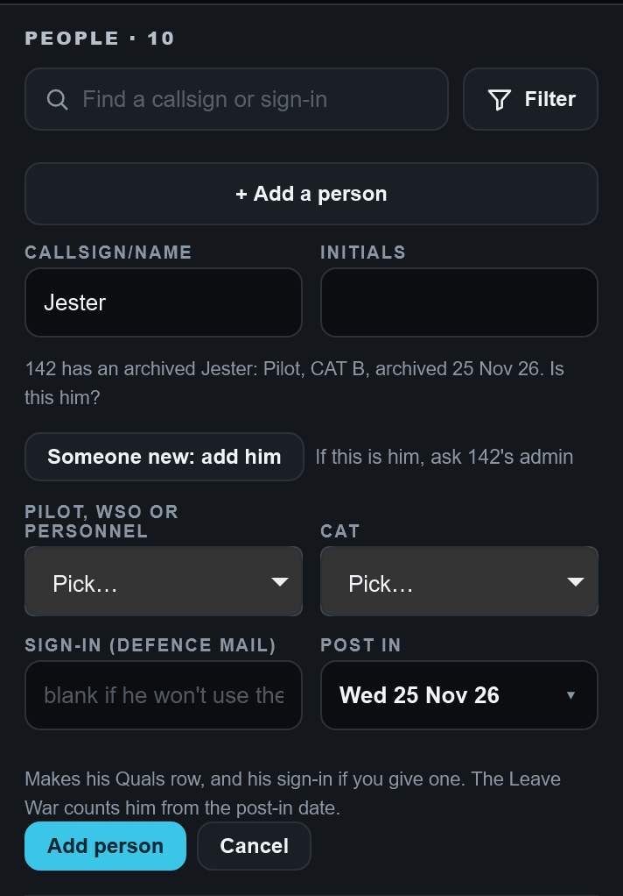<figcaption><b>Drawn, phone</b>.</figcaption></figure>
      <figure><figcaption><b>Drawn</b>: archived men of that callsign on two squadrons, each listed.</figcaption></figure>
      <figure><figcaption><b>Drawn</b>: after "Someone new", 142's admin's bell line.</figcaption></figure>
      <figure>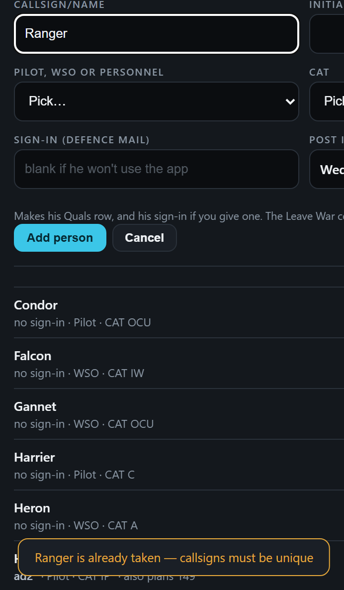<figcaption><b>Today</b>: a live man's callsign: "…is already taken — callsigns must be unique", at the foot of the screen.</figcaption></figure>
      <figure><figcaption><b>Drawn</b>: "Ranger is already taken on 142".</figcaption></figure>
    </div>
    <p class="note">Today an archived callsign gives no warning at all: the new man goes in silently. In the drawing the form's own "Add person" stays live beside "Someone new: add him", two ways to do one thing.</p>
    <p><span class="rec">Recommended:</span> as drawn, with the form's "Add person" greyed while the question shows, so "Someone new: add him" is the one way on.</p>
    <p class="nav"><a href="#list">↑ The list</a><button type="button" class="diff" data-q="D8" aria-pressed="false">Differently</button></p>
  </section>

  <section id="d9" class="newq">
    <h2>D9. Bug reports with their squadron</h2>
    <div class="pair">
      <figure><figcaption><b>Today</b>.</figcaption></figure>
      <figure>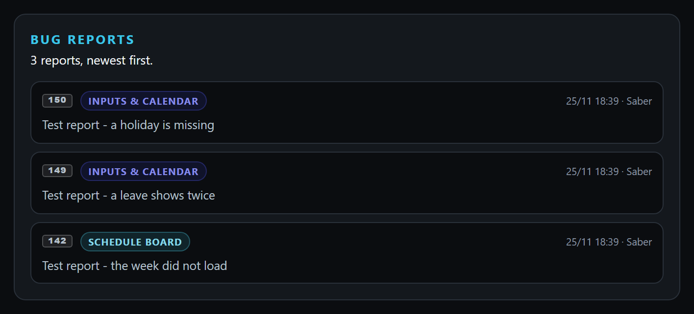<figcaption><b>Drawn</b>: one list, newest first, each report wearing its grey number.</figcaption></figure>
    </div>
    <p><span class="rec">Recommended:</span> as drawn.</p>
    <p class="nav"><a href="#list">↑ The list</a><button type="button" class="diff" data-q="D9" aria-pressed="false">Differently</button></p>
  </section>

  <section id="d10" class="newq">
    <h2>D10. The badge reading "View only"</h2>
    <p class="when"><b>Example</b>: Hunter picks 150, where he can only look.</p>
    <div class="pair">
      <figure><figcaption><b>Drawn</b>: "Hunter · View only".</figcaption></figure>
      <figure class="tall">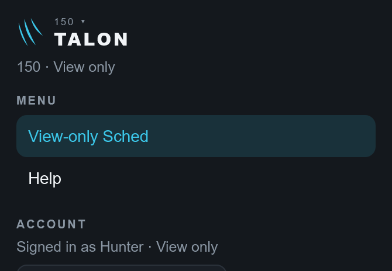<figcaption><b>Drawn, phone</b>: "Signed in as Hunter · View only".</figcaption></figure>
      <figure><figcaption><b>Drawn</b>: on 149, where he plans, it stays "Admin".</figcaption></figure>
      <figure><figcaption><b>Today</b>: a press on the badge on 150 switches him to the member view ("Hunter · Member").</figcaption></figure>
    </div>
    <p><span class="rec">Recommended:</span> as drawn, and a press on the badge still does what it does everywhere: switch to the member view and back.</p>
    <p class="nav"><a href="#list">↑ The list</a><button type="button" class="diff" data-q="D10" aria-pressed="false">Differently</button></p>
  </section>

  <section id="d11" class="newq">
    <h2>D11. "+ Commitment" on a squadron with no SANS aircrew</h2>
    <div class="pair">
      <figure>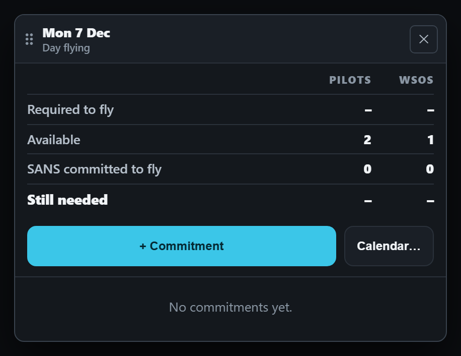<figcaption><b>Today</b>: 150's SANS calendar, "+ Commitment" live.</figcaption></figure>
      <figure><figcaption><b>Drawn</b>: greyed, "150 has no SANS aircrew."</figcaption></figure>
    </div>
    <p><span class="rec">Recommended:</span> greyed, and the reason shown as words beside the button, so a phone shows it too.</p>
    <p class="nav"><a href="#list">↑ The list</a><button type="button" class="diff" data-q="D11" aria-pressed="false">Differently</button></p>
  </section>

  <section id="d12" class="newq">
    <h2>D12. "+ Input" and the sign-off boxes on another squadron</h2>
    <div class="pair">
      <figure>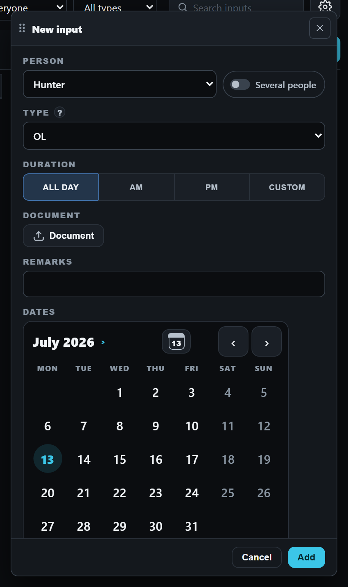<figcaption><b>Today</b>: "+ Input" on 149 starts with Hunter picked.</figcaption></figure>
      <figure><figcaption><b>Drawn</b>: empty, only 149's men offered.</figcaption></figure>
      <figure><figcaption><b>Today</b>: 149's PLANNED BY list.</figcaption></figure>
      <figure>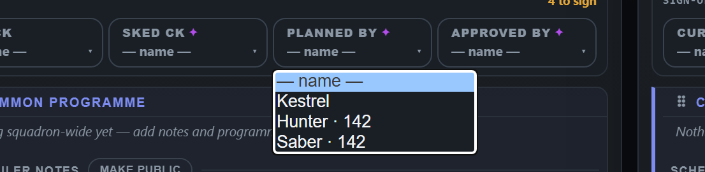<figcaption><b>Drawn</b>: names from another squadron wearing "142".</figcaption></figure>
    </div>
    <p><span class="rec">Recommended:</span> as drawn. In the sign-off boxes the number is written after the name in plain letters ("Hunter 142"), because the browser's own list cannot show the grey box.</p>
    <p class="nav"><a href="#list">↑ The list</a><button type="button" class="diff" data-q="D12" aria-pressed="false">Differently</button></p>
  </section>

  <!--GBSECTIONS-->
</main>
